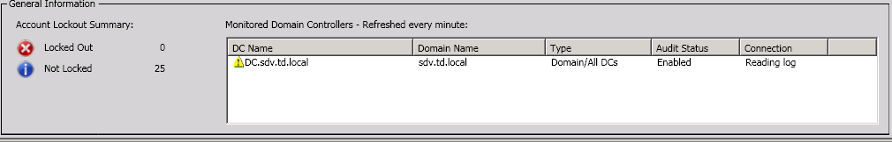
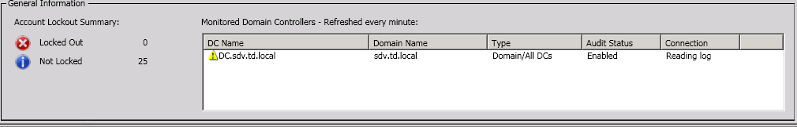
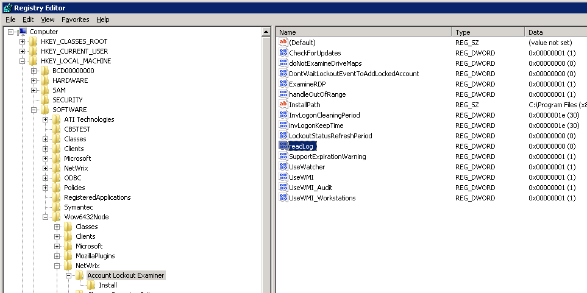

In NetWrix Account Lockout Examiner Console, a domain controller has a yellow exclamation
mark in front of the DC Name column of the Monitored Domain Controllers grid.
Connection status is shown Reading log. Lockout events from this domain
controller cannot be read by the program as well.


This issue can appear either right after the NetWrix Account Lockout Examiner
installation, or after the NetWrix Account Lockout Examiner Service restart. The program
is referring to the event logs created earlier, before the installation or restart, and
fails to complete reading the logs. To fix the issue, do the following:
- Open Registry Editor: navigate to Start - Run, enter regedit and click OK.
- In the left pane, navigate to HKLM Software[Wow6432Node]NetWrixAccount Lockout Examiner. The step Wow6432Node is only applied to x64 OS.
- In the right pane, double-click readLog, specify 0 in the Value data field and click OK.
-
In NetWrix Account Lockout Examiner Console main menu bar, navigate to
File - Settings and click OK to apply registry changes.
